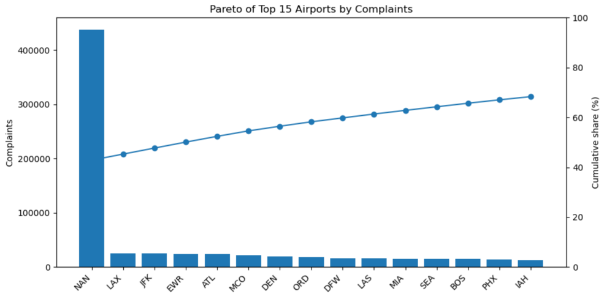
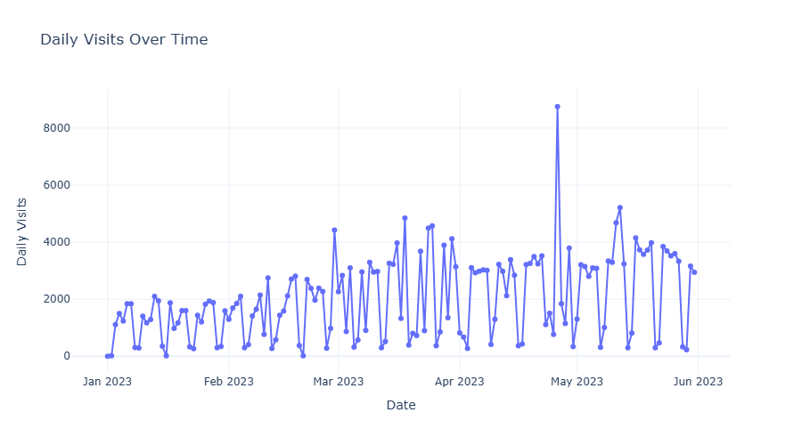
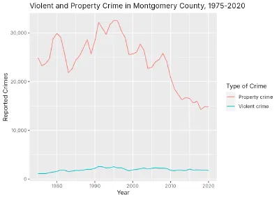
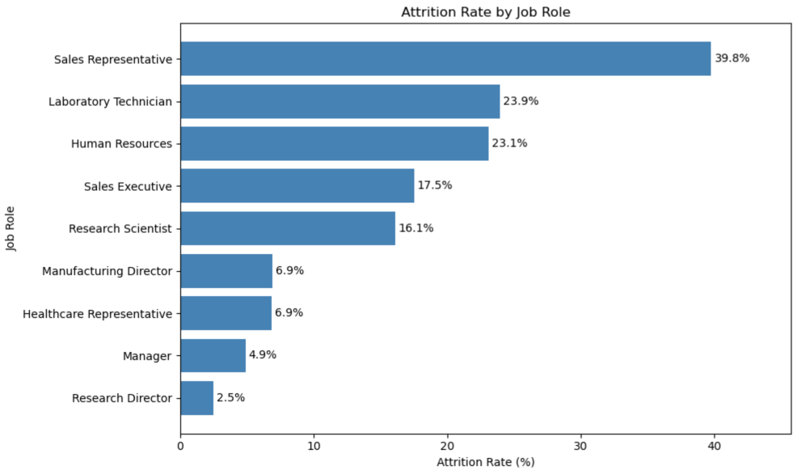
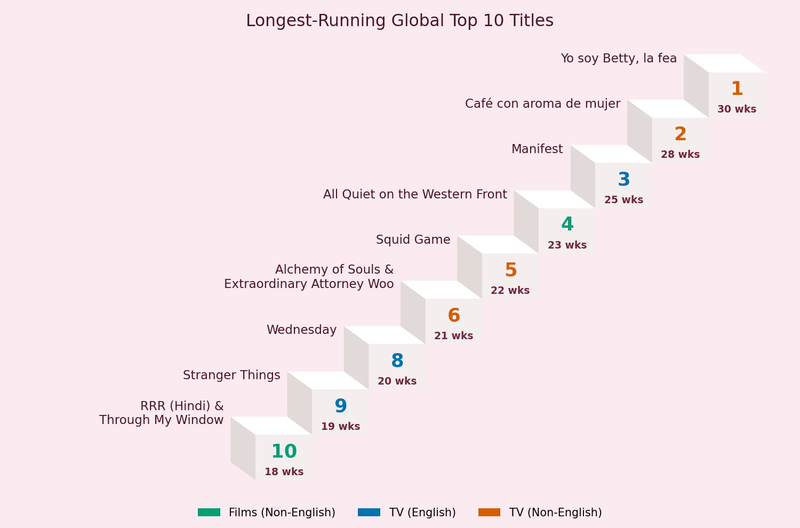

About
I am a data analyst completing my M.S. in Data Science at Bellevue University, with the goal of supporting evidence-based decision-making in the federal government. My professional background in risk analysis strongly shapes how I work. I approach complex problems by critically questioning data, evaluating evidence, and identifying patterns that drive practical solutions.
Building on this foundation, my graduate studies have deepened my technical toolkit in Python, R, SQL, statistical analysis, data visualization, and predictive modeling. My project work applies public and organizational data to answer real-world questions across public safety, transportation, government operations, education, entertainment, and workforce analytics.
I approach data science with a commitment to accuracy, critical thinking, and clear communication. I aim to bridge the gap between technical complexity and actionable insights for both technical and nontechnical audiences.
What I Bring
- Data cleaning and preparation: standardizing codes, parsing dates, fixing data types, and merging multiple sources (such as four separate TSA complaint datasets) into analysis-ready data.
- Working at scale: analyzing datasets ranging from hundreds of thousands to about one million records.
- Problem framing: looking past the obvious metric to find the more useful question, such as measuring a Netflix title's staying power rather than its launch week.
- Actionable recommendations: translating findings into decisions leaders can use, including where to direct resources, when to adjust staffing, and how to identify employees who may be at risk of leaving.
- Independent and collaborative: owning a project from start to finish and contributing as part of a team.
Tools and Technical Skills
- Programming and Analysis: Python, R, SQL
- Python Libraries: pandas, NumPy, Matplotlib, Seaborn, Plotly, scikit-learn
- R Visualization: ggplot2
- Business Intelligence: Power BI, Excel
- Development Environment: Jupyter Notebook, RStudio
- Analytical Methods: Data Cleaning, Exploratory Data Analysis, Statistical Analysis, Data Visualization, Data Storytelling, Predictive Modeling
Featured Work
These projects demonstrate a range of analytical methods, programming tools, and practical applications. Completed analyses are being added to GitHub, alongside three planned projects that will expand the portfolio's technical scope.
Public Sector & Operations
-
TSA Complaint Hotspots
(Python)
Analyzed about one million TSA complaint records by airport, category, and month to identify where training and resources would have the greatest impact.

-
White House Visitor Traffic Analysis
(Python, Plotly)
Analyzed 303,374 White House visitor appointment records from January through May 2023 to identify hourly, daily, and monthly scheduling patterns and recommend staffing for peak periods.

-
Montgomery County Crime Rate Analysis
(R)
Combined county, state, and Census data to compare crime per capita, finding that the county has one of Maryland's lowest crime rates when population is considered and that its crime rate fell about 71% between 1980 and 2020.

-
Predicting Employee Attrition (Python, scikit-learn)
Built a logistic regression model to flag employees at higher risk of leaving and identified key drivers, including overtime and job role.

-
Detecting Unusual Medicare Provider Billing
Patterns (Python, TensorFlow)
(Planned)
Building a neural network to flag Medicare providers whose billing patterns stand out for review, applying a risk-analysis approach to federal program oversight.
-
College Starting Age and Academic
Performance (Python)
Exploratory analysis of a UCI Machine Learning Repository dataset examining whether students' age at enrollment relates to first-semester grades.
-
Netflix Top 10 Viewership Analysis
(Python)
Analyzed Netflix Top 10 viewing data from 2021 to 2024 to compare initial popularity with staying power, finding that TV drew about 71% of viewing hours and that 8 of the 11 longest-running titles were non-English.

-
120 Years of Olympic History (SQL)
(Planned)
Querying a relational database of Olympic athletes and results to examine medal leaders by country, the growth of women's participation, and host-country advantage.
-
Hospital Quality Ratings Dashboard
(Power BI) (Planned)
Building an interactive dashboard of CMS hospital star ratings to compare quality of care by state and ownership type.
Predictive Modeling & Machine Learning
Exploratory Analysis & Data Storytelling
Databases & Business Intelligence
Contact
- Email: charrison@my365.bellevue.edu
- GitHub: github.com/CorHarr